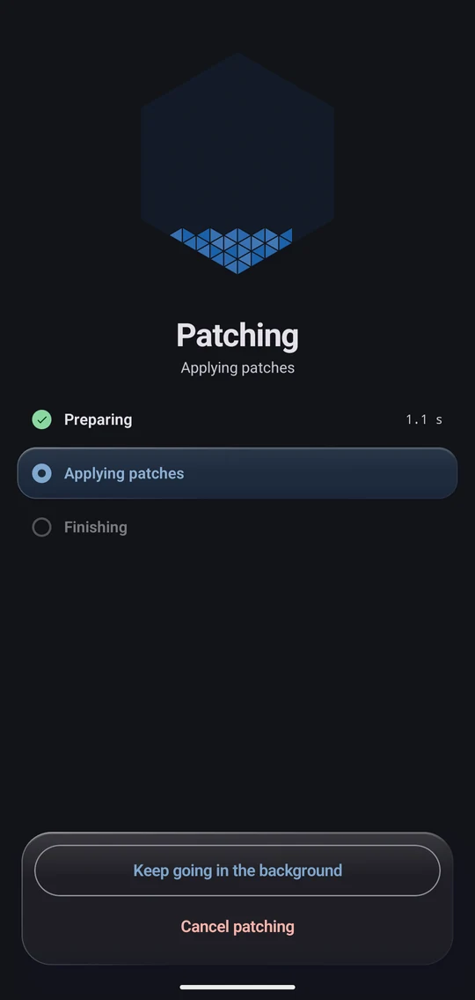

-
1 of 4
One progress, start to finish
The hexagon fills across the whole run, from the first step to the last. It shows the check only when the app is installed.
-
2 of 4
Patching happens on your phone
The patch bundles run on the device. Oru does not upload your APK files, and the file you choose stays yours.
-
3 of 4
Signed here, installed here
A signing key is created on the device at the first patch. Oru installs with the installer you choose. Android asks you to confirm the install, unless Shizuku is running and allowed to install for Oru.
-
4 of 4
Simple or Expert
In Simple, each app shows one sentence and one button. The Simple and Expert switch is on the bottom bar of the Home screen. Expert lets you choose the version, patches, options, installer and patch channel for each app.
One patch source per app. You choose it in Expert mode, and adding a source never changes the apps you already set up.
Patch your apps in one tap, on your own phone.
A calm, beautiful patch manager. Pick an app, tap once, and follow one honest progress from the first byte to the install. Oru runs patch bundles on an APK you supply, signs the result on your device and installs it.

Why Oru
Oru runs the same patch bundles as other patch managers. What differs is the app around them: it is built to be quiet, quick to understand and nice to use.
- Simple. One sentence and one button for each app. Oru picks the right version and the recommended patches for you, so there is no settings maze between you and a patched app. Expert is one switch away when you want control.
- Beautiful. Fluid motion, soft glass and a single hexagon that fills as your app is patched. The screens are made for the few minutes a week you spend in them.
- Fast. In one emulator test with the same input and the same 96 patches, Oru patched in about 90 seconds and Morphe Manager in about 156. It is a small test, so the method and limits are written down.
- Honest. One progress for the whole run, with real stages and real counts. Everything happens on your phone: no account, no analytics, no uploads.
Quick to patch.
The same app, the same 96 patches, the same emulator. Oru patched it in about 90 seconds. Morphe Manager took about 156. A longer bar is faster.
Independent project
Oru is a modified version of Morphe Manager, which is built on ReVanced Manager and Universal ReVanced Manager. Thanks go to the Morphe and ReVanced contributors and to the authors of every patch bundle.
Oru is not made, endorsed or supported by Morphe, ReVanced, Google or the makers of any app that Oru can patch. Patch bundles are the work of their authors. Oru does not provide, host or distribute apps, APKs or patches.
Patching an app can change how it behaves and may break it. Patching may also go against the terms of service of that app. You are responsible for the apps you patch and for the APK files you use.
Requirements
- Android 8.0 (API 26) or newer.
- Shizuku is optional. When Shizuku is running and Oru is allowed to use it, Oru can install without showing the system prompt.
- Free storage for the APK you supply and for the patched output. Check the size of the app you want to patch first.